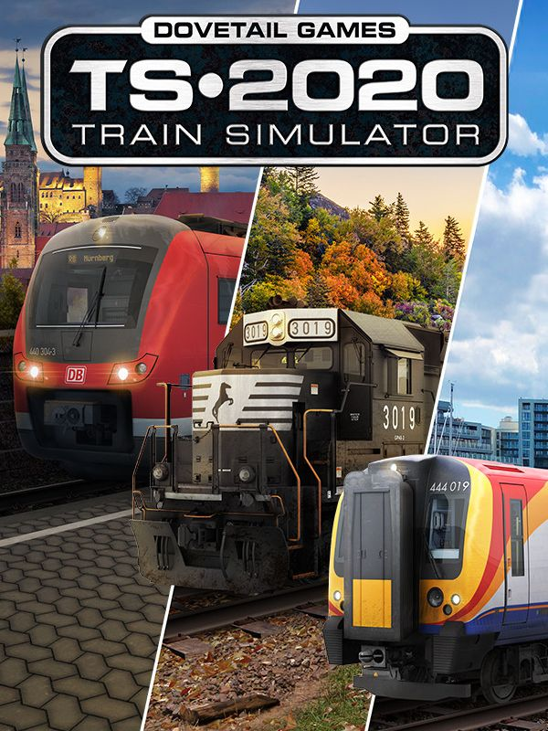

Train Simulator
Train Simulator
Details
|  | |
| Playtime | Not Played |
| Last Activity | Never |
| Added | 23/11/2021 11:42:07 |
| Modified | 20/05/2023 8:17:43 |
| Completion Status | Not Played |
| Library | Steam |
| Source | Steam |
| Platform | PC (Windows) |
| Release Date | 12/06/2009 |
| Community Score | 50 |
| Critic Score | |
| User Score | |
| Genre | Simulator |
| Developer | Dovetail Games |
| Publisher | Dovetail Games |
| Feature | Single Player |
| Links | Official Website Steam Wikia Wikipedia Twitch Youtube |
| Tag | [EMT] Logo Missing [EMT] Video Micro missing |
Description
New DLC Available
https://store.steampowered.com/app/1717652
https://store.steampowered.com/app/1717653
https://store.steampowered.com/app/1515062
About the Game

THE ULTIMATE RAIL HOBBY
Take to the tracks and control powerful iconic locomotives from around the world. Master complex operations on the BR Class 323, DB BR 429.1, Amtrak's Acela, and more as you deliver passengers and freight to their destinations with a packed timetable of real-world services and scenarios. Whatever you love about trains, Train Simulator 2022 lets you take your hobby to the next level.

Northeast Corridor: Washington DC - Baltimore
Train Simulator’s Northeast Corridor: Washington DC – Baltimore route extends from Washington, DC, 41 route miles north to Baltimore, where iconic Baltimore Penn Station rests near the north portal of the B&P Tunnel. This route features realistic locomotives and equipment, including Amtrak's ACS-64 and Acela. Amtrak's prestigious Acela Express has been enhanced with additional improvements to audio, in-cab signalling and further engineering to improve line-side signalling for Train Simulator 2022.
Frankfurt - Koblenz
The 80-mile Frankfurt – Koblenz route serves a mix of regional and intercity traffic, and covers the Picturesque Linke Rheinstrecke from Koblenz Hbf to Mainz Hbf and Historic Mainbahn from Mainz Hbf to Frankfurt (Main) Hbf. Conduct services here in the strikingly branded SÜWEX (Südwest-Express) DB BR 429.1 FLIRT 3 as well as the DB 411 ICE T, DB BR 185.1 and more. Alongside Train Simulator 2022, the Frankfurt - Koblenz route signalling has been completely re-engineered along with more detailed scenery to offer a more realistic experience.
Birmingham Cross City Line: Lichfield – Bromsgrove & Redditch
Take control of the BR Classes 323, 350/1, 350/2 and 350/3 along the 37-mile Cross City Line from Lichfield Trent Valley to Bromsgrove & Redditch via Birmingham New Street. Be ready to tackle the famed Lickey Incline, the steepest sustained main-line railway gradient in Great Britain; 1:37.7 for two miles between Bromsgrove and Barnt Green. The Birmingham Cross City Line has been re-engineered with improvements to scenery and new licensed brands on the BR Class 323 for Train Simulator 2022.